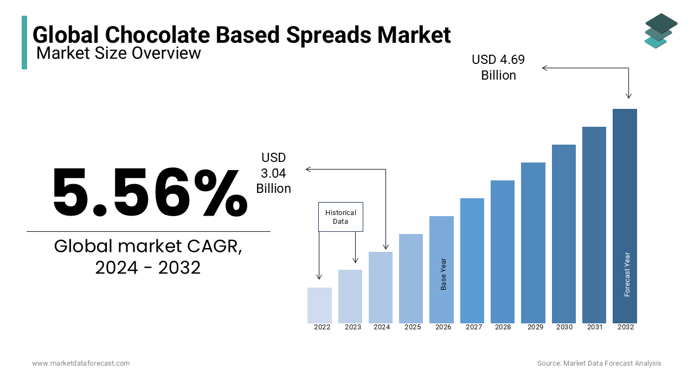
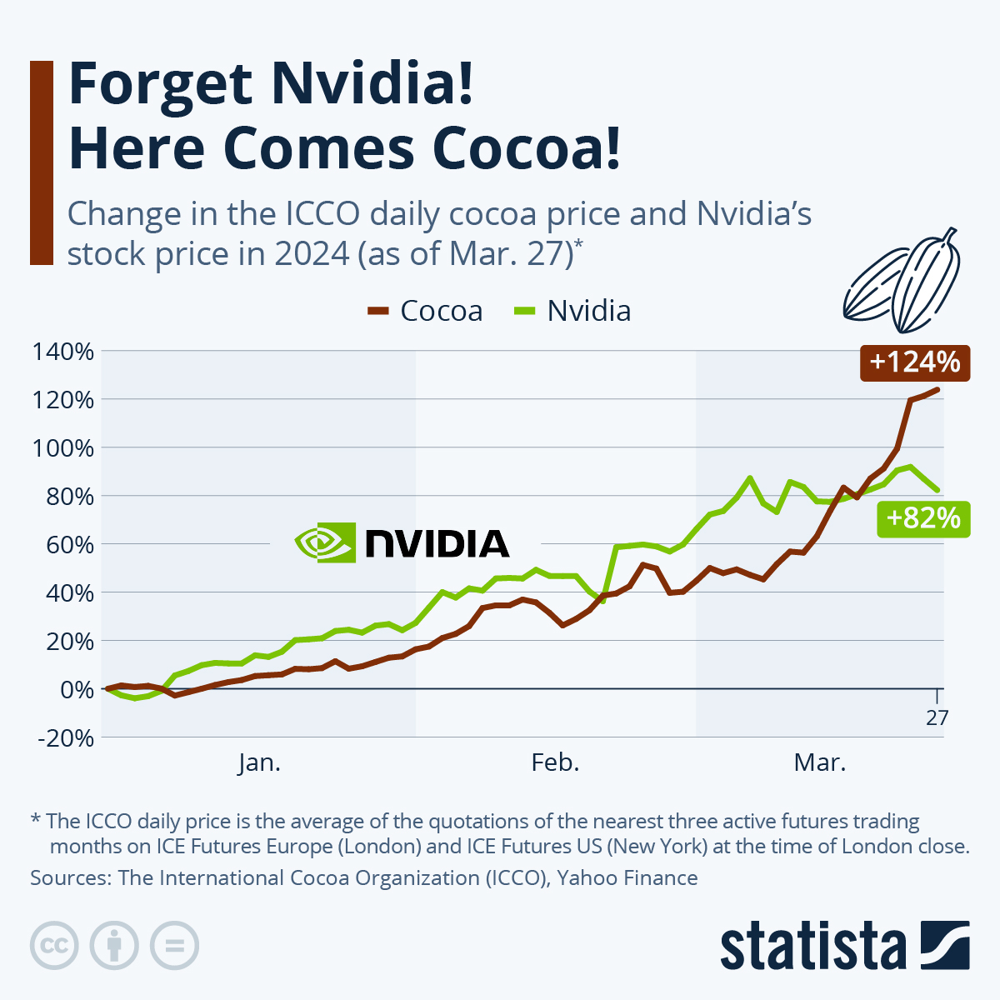
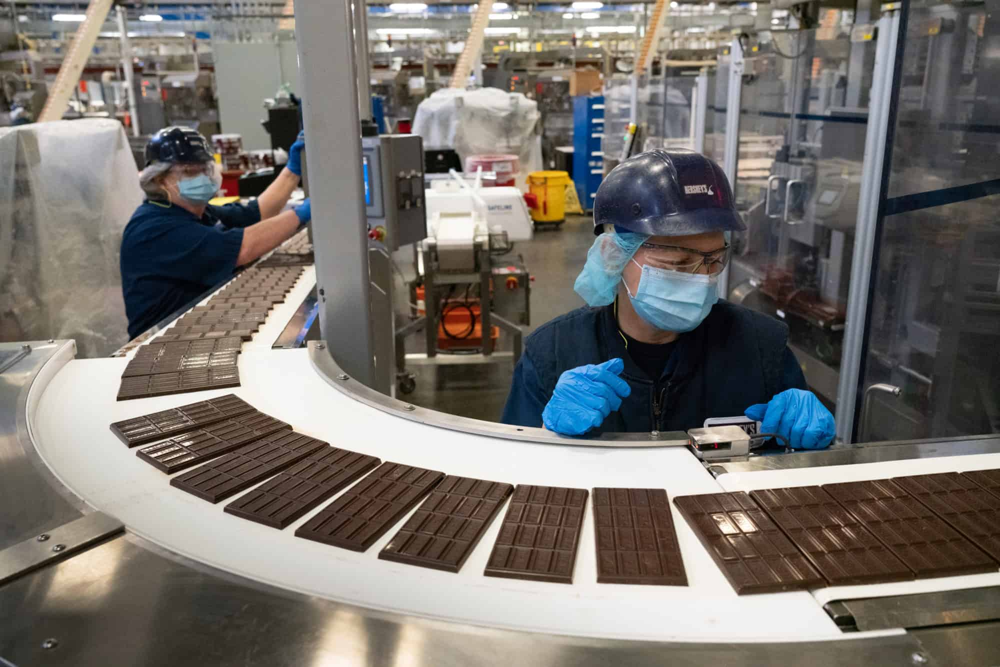

The modern chocolate industry presents a paradox of abundance and deprivation. At the heart of this $130+ billion market lies a global supply chain characterized by extreme inequality: while chocolate consumption continues to rise, particularly in North America, Europe, and emerging markets, millions of smallholder cocoa farmers in producing regions, especially in West Africa, remain mired in poverty. Côte d'Ivoire and Ghana alone account for approximately 70% of the world's cocoa output, yet most farmers in these nations earn less than $1 per day. This economic precarity persists despite the increasing global demand for chocolate.
The Global Chocolate Economy

Global chocolate market value visualization

Child slavery being used for Cocoa harvesting in West Africa
The structure of the supply chain reveals why. Of the total value of a typical chocolate bar, only around 6% reaches the farmers who grow the cacao. The bulk of profits are concentrated in the hands of a few major chocolate manufacturers and traders, many of whom report annual revenues in the billions. These disparities highlight the fundamental injustice embedded in commodity chains: those who perform the most labor-intensive and vulnerable work receive the least compensation. Attempts to correct this through fair trade and sustainability certification programs have had mixed success, offering higher prices and improved conditions for some farmers, but often failing to challenge the broader system of global economic dependency.
Cacao has been embedded in global capitalist economies since the earliest days of European colonial expansion. Following the Spanish conquest of the Americas, cacao quickly transitioned from indigenous ritual good to export commodity. Colonial powers established large-scale plantations in the Caribbean, Brazil, and later West Africa, using enslaved labor to cultivate cacao under brutal conditions. This plantation model, extractive, hierarchical, and racialized, set the tone for cacao's place in the global economy for centuries to come. The 19th and early 20th centuries brought further changes. European powers shifted cacao production to their African colonies, where smallholders were coerced into export-oriented agriculture through taxation and price controls. Despite the formal end of empire, these economic structures remained largely intact. Cocoa-producing countries have long been relegated to the role of raw material exporters, while value-added processes like processing, branding, and marketing remain dominated by firms in the Global North. Even today, this division defines the economics of chocolate.


Hershey's Modern chocolate manufacturing facility
The economic inequalities of the chocolate industry are not merely historical artifacts, they are active, structural realities. Farmers in West Africa must contend with volatile global cocoa prices that fluctuate due to weather events, political instability, and speculation in international markets. Unlike large corporations, smallholder farmers lack the financial cushion to absorb these shocks, leaving them vulnerable to food insecurity and indebtedness. The COVID-19 pandemic further exposed these vulnerabilities, disrupting supply chains and slashing household incomes. Despite increasing awareness, many of the most pressing problems persist. Child labor remains endemic in parts of the cocoa industry, a symptom of both poverty and systemic neglect. Programs aimed at ethical sourcing have helped establish new standards, but they remain limited in scope and effectiveness. Without deeper reforms, such as global price stabilization mechanisms, direct investment in rural infrastructure, and farmer-led cooperatives, the cacao trade will continue to replicate colonial patterns of exploitation under the guise of modern capitalism.
The geographic divide between where chocolate is consumed and where cacao is grown underscores the global inequality built into the industry. Consumers in the United States, Europe, and increasingly Asia enjoy a dazzling array of chocolate products, many of them marketed as artisanal, ethical, or luxury items. Meanwhile, the producers of the raw material remain largely excluded from these premium markets. Even in certified or specialty supply chains, the vast majority of wealth accumulation occurs downstream, in places far removed from the realities of cacao farming. Yet there are signs of alternative economic possibilities. The rise of the craft chocolate movement, alongside cocoa tourism and direct trade models, offers some farmers and local entrepreneurs the opportunity to capture more value. Innovation in premium chocolate production is also opening new doors for business in both rural and urban contexts. Nevertheless, these gains are uneven, and without widespread systemic change, they risk becoming boutique exceptions to an otherwise extractive global norm. The challenge remains: how to ensure that the future of chocolate is not only sustainable, but just.